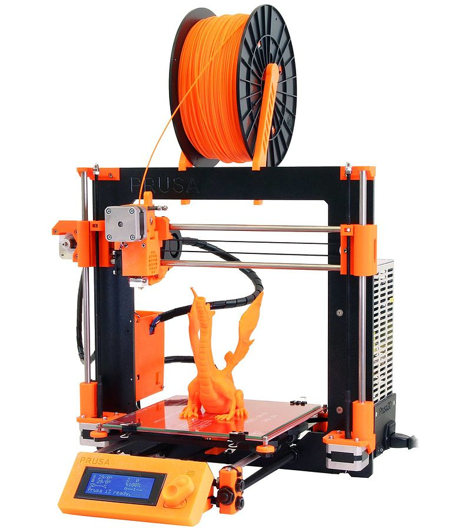
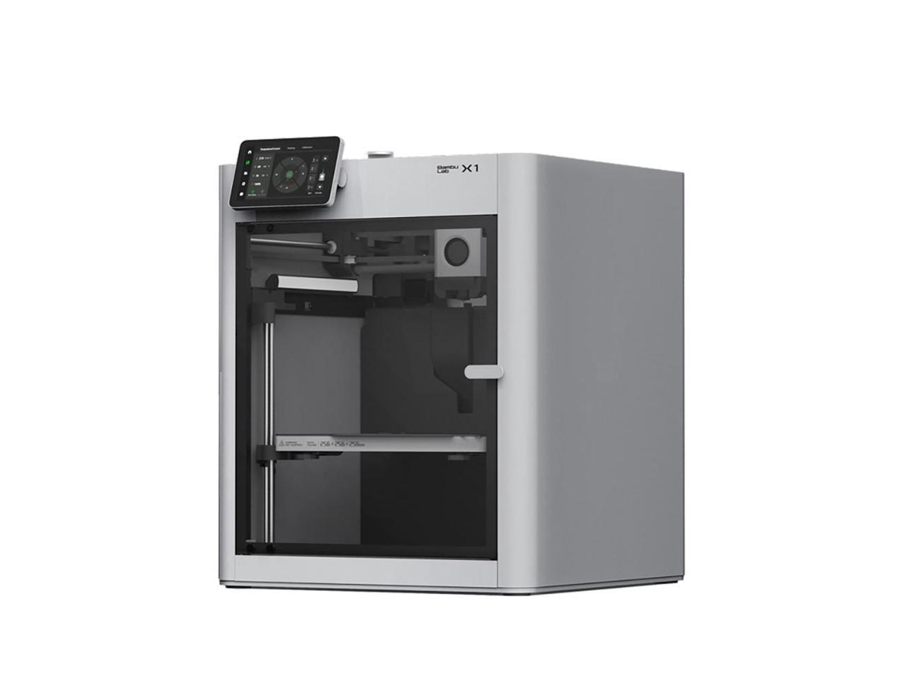
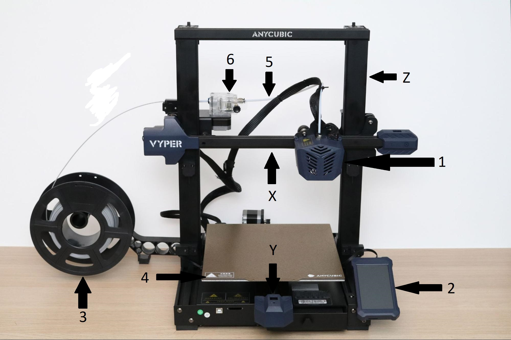
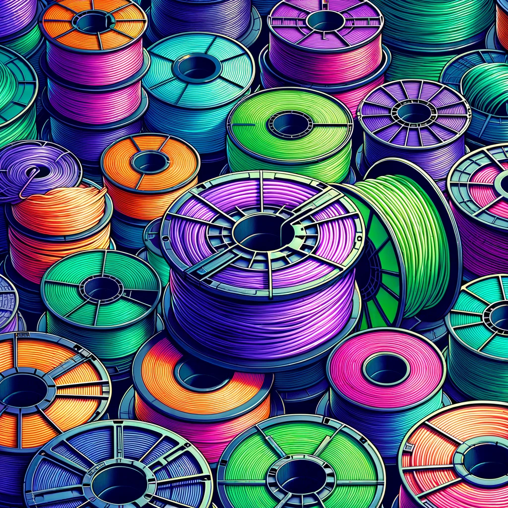
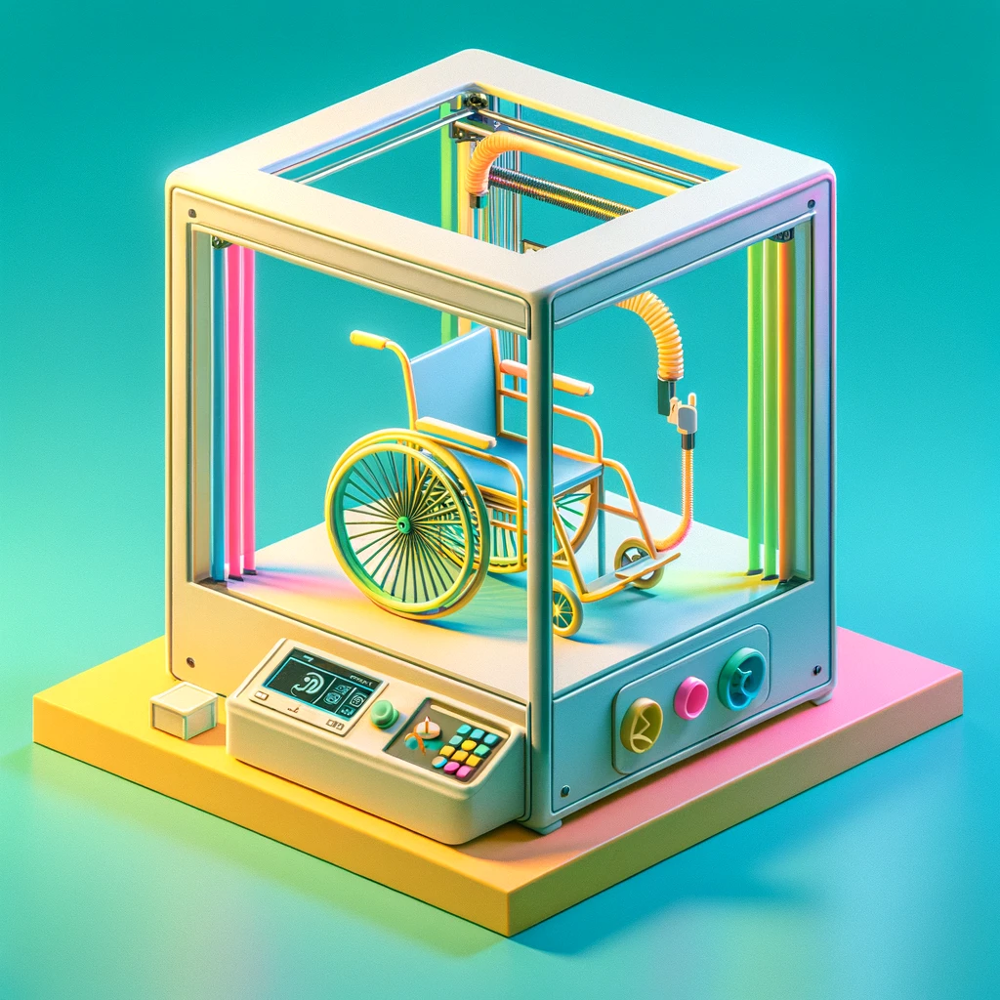
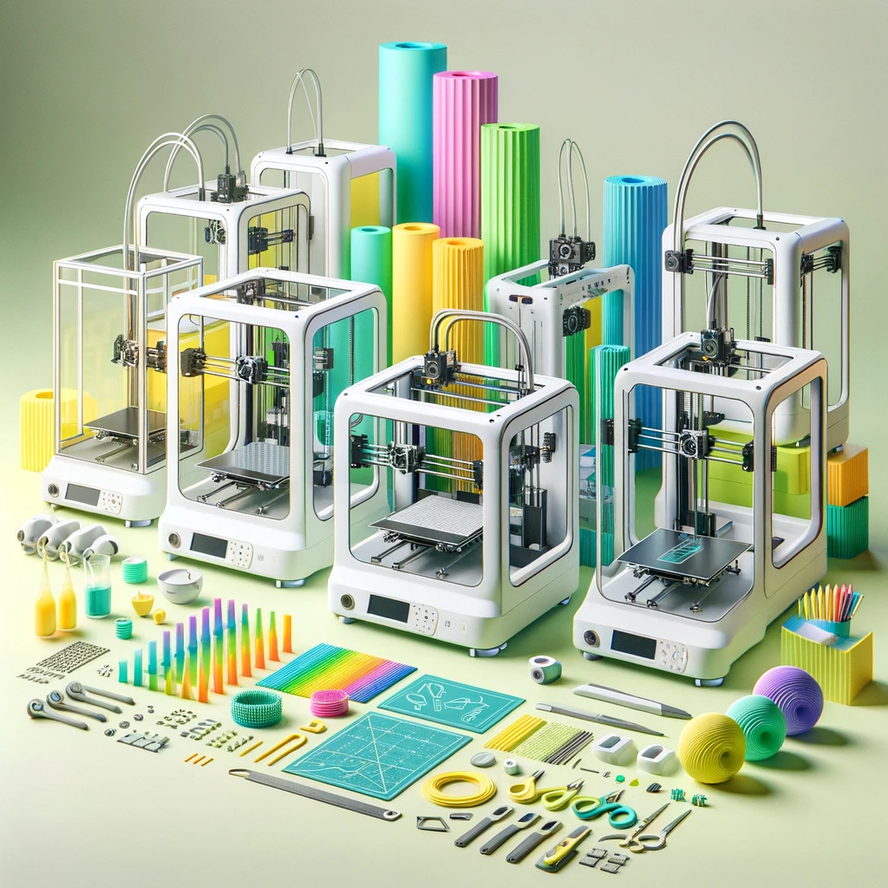

Imprimante 3D
Création de matériel adapté
L’imprimante 3D est une technologie qui permet de créer des objets en plastique à partir d’un modèle en trois dimensions. On peut concevoir ces modèles soi-même ou les trouver sur internet. Au niveau du matériel adapté, l’utilisation de cet outil ouvre un monde de possibilités. Cela peut aller de projets relativement simples comme une poignée pour faciliter la prise d’un ustensile jusqu’à des modifications complexes pour un fauteuil roulant, en passant par une switch adaptée. Les opportunités d’innovation sont donc légion. En plus de pouvoir créer des objets novateurs, il est aussi possible de reproduire du matériel adapté qu’on peut se procurer dans des magasins spécialisés mais à un coût largement inférieur. Cet outil présente donc un double avantage en favorisant la création de divers produits tout en générant des économies sur les coûts. Pour les personnes ou organisations qui souhaitent se lancer dans la production locale de matériel adapté pour leur communauté, c’est un appareil incontournable.
Historique
L’évolution de l’impression 3D a été spectaculaire ces dernières années, soulignant son potentiel révolutionnaire dans la manière de produire des biens, y compris des équipements spécialement adaptés aux besoins des personnes en situation de handicap. Cette trajectoire met en évidence la vitesse impressionnante de l’innovation dans ce domaine, annonçant des avancées prometteuses pour l’avenir. Un court regard vers le passé montre à quel point le domaine progresse rapidement.
-
Premiers balbutiements
2005-2015
RepRap
 Les premiers modèles d’imprimantes accessibles pour l’utilisation des particuliers ont vu le jour suite à la création du projet RepRap en 2005 par Adrian Bowyer, qui visait à créer des machines auto-réplicables. Ce type d’imprimante nécessitait d’importantes habiletés techniques; les pièces devaient être achetées individuellement et le tout était assemblé et programmé par l’utilisateur de A à Z. C’était donc une technologie qui était accessible à un nombre très restreint de personnes. Malgré le temps et les compétences requises, la qualité des objets imprimés restait limitée.
Les premiers modèles d’imprimantes accessibles pour l’utilisation des particuliers ont vu le jour suite à la création du projet RepRap en 2005 par Adrian Bowyer, qui visait à créer des machines auto-réplicables. Ce type d’imprimante nécessitait d’importantes habiletés techniques; les pièces devaient être achetées individuellement et le tout était assemblé et programmé par l’utilisateur de A à Z. C’était donc une technologie qui était accessible à un nombre très restreint de personnes. Malgré le temps et les compétences requises, la qualité des objets imprimés restait limitée.
-
Commercialisation de masse
2015-2020
Ender3 et I3
 À partir de 2015, de multiples modèles d’imprimantes 3D sont commercialisés; la i3 de Prusa et la Ender 3 de Creality ont été vendues à plusieurs millions d’exemplaires et sont emblématiques de cette époque. Ces imprimantes sont relativement facile d’utilisation. Cependant, il faut les ajuster de manière routinière afin d’en assurer le bon fonctionnement. Elles sont aussi sujettes à subir des bris; des connaissances de base en électronique sont donc utiles pour effectuer leur maintenance. Ce sont ces modèles qui ont permis de populariser la fabrication de matériel adapté; c'est dans cette période que cette pratique connait son essor, avec entre autres la création de MakersMakingChange en 2017.
-
Démocratisation et automatisation
2020-
Nivellement automatique et rapidité
 À partir de 2020, plusieurs imprimantes 3D à ajustement automatique ont fait leur apparition, la technologie se raffinant progressivement pendant quelques années. C’est avec le lancement de la X1C de BambuLab en 2022 que l’impression 3D à domicile est devenue véritablement accessible, sans nécessité de compétences techniques ou mécaniques. Ce modèle a incité les compétiteurs à relever la qualité de leurs produits, ce qui a entraîné une vague d’amélioration et d’innovation dans le domaine. Cette nouvelle génération est aussi beaucoup plus rapide que celles la précédant (de 3 à 5 fois plus rapide). Il est donc maintenant possible de créer davantage d’objets et aussi de tester plus rapidement ses conceptions. AInsi, aujourd’hui, il suffit d’appuyer sur un bouton pour obtenir un objet en 3D de haute qualité, sans avoir à se soucier outre mesure du fonctionnement, de l'ajustement et de la maintenance de l’appareil.
Diversité
Il existe plusieurs types d’imprimantes 3D qui utilisent une multitude de matériaux et de modes de productions. Cependant, plusieurs d’entre ceux-ci sont réservés à la production industrielle (e.g. imprimante à métal ou à très grand format). Au niveau des modèles de hobbyistes, disponibles pour le grand public, les imprimantes à filament et à résine sont les deux types qui ont la grande majorité des parts de marché. Nous ne traiterons pas en détail des imprimantes à résine, puisque leur emploi est marginal dans le domaine du matériel adapté. Leur utilité est davantage pour la réalisation de petites pièces avec une haute qualité au niveau des détails. Généralement, elles sont utilisées pour des projets qui demandent une très haute précision, tel que dans le domaine de l’ingénierie ou pour des figurines. Par ailleurs, leur maniement requiert de l’équipement spécialisé (chambre UV) et implique de manipuler de la résine, ce qui nécessite des équipements de protection. En conséquent, l’imprimante à filament s’impose donc comme le meilleur choix pour notre contexte.
Imprimante à filament
Ce type d’appareil se caractérise par sa simplicité et son intuitivité au niveau de l’utilisation. Grâce à cette méthode, il est possible de produire des pièces d’une certaine taille (d’environ 150mm³ à 300mm³, dépendamment des modèles) de bonne qualité. Pour comprendre son fonctionnement, il suffit de mentionner qu’elle est composée d’une tête qui chauffe et qui fait avancer le filament et d’un système qui lui permet de bouger dans les trois dimensions (gauche-droite, avant-arrière et haut-bas). Elle procède couche par couche, en déposant progressivement du plastique pour construire l’objet de sa base vers son sommet. Afin de favoriser une meilleure compréhension de son fonctionnement, il est utile de connaître les diverses pièces qui la compose:
- Tête d'impression: C'est l'endroit où le filament passe par la buse chauffée qui fond le plastique. Elle comporte typiquement deux ventilateurs (un pour refroidir les composantes et un pour refroidir le plastique une fois qu'il est extrudé);
- Écran: Permet de contrôler l'imprimante et de procéder à des ajustements sur l'appareil; 
- Support à filament: Soutien le rouleau à filament et lui permet de se dérouler;
- Lit: La surface sur laquelle le plastique se dépose. Il est chauffant; par exemple, pour le PLA, il devrait être autour de 60 degrés. Il existe une multitude de types de surfaces (e.g. en vitre, en métal, en matériau composite). La plupart des imprimantes 3D modernes sont équipées d'une surface d'impression magnétique en PEI, consistant en une couche mince et flexible de métal couverte de thermoplastique;
- Tube Bowden ou PTFE: Il s'agit d'un tube qui permet de guider le filament jusqu'à la tête d'impression;
- Extrudeur: Composante qui pousse le filament. L'extrudeur peut être une composante séparée (comme sur cette photo) mais il peut aussi être intégré a la tête de l'imprimante.
- XYZ: Les imprimantes 3D utilisent trois axes de mouvement, X, Y, et Z, pour contrôler soit le déplacement du plateau d'impression, soit celui de la tête d'impression. La manière dont l'imprimante va bouger sur ces trois axes peut varier dépendemment de la conception de l'appareil. Sur cette image, il s'agit d'une imprimante cartésienne, dans laquelle les trois axes se déplacent de manière indépendante (chacun leur moteur). Ainsi, le lit se déplace sur l'axe des Y et la tête se déplace sur l'axe des X et des Z. Un autre mode de fonctionnement que l'on retrouve fréquemment est Core XY (voir photo de l'imprimante Bambu Lab dans la section historique) qui utilise le même système afin de déplacer les axes X et Y,ce qui permet une impression plus rapide. L'axe des Z est alors géré par le lit qui descend progressivement pendant l'impression. il existe une multitude d'autres modes de fonctionnement (e.g. SCARA, ceinture, polaire), mais ils sont utilisés de manière marginale dans les imprimantes commerciales.
Filament
Il existe une multitude de types de filaments. Au niveau du matériel adapté, on peut réaliser une grande majorité des projets avec les trois variétés suivantes, qui sont aussi les plus disponibles et les moins dispendieuses. On peut trouver tous ces types de filaments facilement sur amazon, de pratiquement toutes les couleurs qu’on peut imaginer. La qualité est rarement un enjeu; les principales compagnies ont toutes des produits qui s’équivalent à peu près (Elegoo, Eryone, Sunlu, Esun, Overture, etc.).
- PLA: C'est le filament le plus couramment utilisé dans pratiquement toutes les applications d’imprimante à filament. Il est facile d’utilisation car son point de fusion est relativement bas et qu'il adhère bien à divers types de surfaces. Il est à base de bioplastique, c’est-à-dire qu’il est produit à partir de plantes, principalement la canne à sucre et le maïs. Il est théoriquement biodégradable mais seulement dans des conditions très précises. Il est peu odorant et ne dégage pas de substances nocives pendant la production. Finalement, il est peu dispendieux et disponible dans une multitude de couleurs. Son inconvénient est qu'il est relativement fragile. Il est le filament parfait pour les débutants et la production d’une majorité des pièces utilisées dans le domaine des technologies adaptées.
- PETG: Il est un proche cousin du PET, plastique qui est utilisé pour la production des bouteilles de plastique du commerce. Ce matériau est légèrement plus difficile d’utilisation que le PLA en raison de son point de fusion plus élevé et des défis qu'il peut présenter lors de l’impression (stringing et oozing). Il dégage une légère odeur lors de l’impression et est un peu plus cher que le PLA. Cependant, il présente un avantage majeur, soit sa force et sa résistance. Le PLA peut être cassant (brittle) dans certains contextes. Ainsi, nous utilisons le PETG dans le mécanisme de ressort de certains modèles de switch adaptée qui sont utilisés par des personnes qui ont de la difficulté à modérer leur force. Il est aussi souhaitable de l’utiliser dans des contextes où le matériau va subir du stress, comme dans l’enceinte de certains appareil de montage ou pour des adaptations de fauteuil roulant qui requièrent une force supérieure au PLA (e.g. skis ou pièces de remplacement). 
- TPU: C'est un plastique qui est très proche du polyuréthane. Il présente deux caractéristiques qui le rendent unique et essentiel: sa flexibilité et son élasticité. Au niveau de l’utilisation, ce ne sont pas toutes les imprimantes qui vont avoir de bons résultats avec ce filament. Elles doivent être munies d’une extrudeuse de qualité. La première couche est souvent difficile étant donné l’élasticité du plastique sur le plateau. Il est aussi nécessaire de ralentir significativement la vitesse de l’imprimante afin d’empêcher un blocage. Il est donc utilisé dans certains contextes précis. Par exemple, pour la fabrication d’un étui pour une tablette. Un casque pour une licorne (appareil qui permet un contrôle avec la tête) est aussi idéalement fait en TPU.
- Autres filaments: Il y a quelques autres filaments qui pourraient avoir leur place dans certains contextes de création de matériel adapté. L’ABS est utilisé dans le domaine de la mécanique; il est résistant à la chaleur, il pourrait donc être utilisé pour réaliser des pièces de remplacement dans des environnements chauds, comme à l'intérieur de certains matériels informatiques. Sinon, le Nylon a des propriétés physiques qui en font un matériau très intéressant (force, flexibilité, résistance), cependant, il est coûteux et difficile d’utilisation. Il serait indiqué pour des pièces qui doivent tolérer un haut niveau de stress. À noter que ces filaments nécessitent une enceinte, c’est-à-dire que l’environnement de l’imprimante doit être contrôlé afin de maintenir une température constante et relativement haute.
Dimensions
La taille de l’imprimante correspond au volume d’impression; cela influence la taille maximum des objets pouvant être produits. Une imprimante de petit format (moins de 200mm³) va quand même permettre de créer une majorité du matériel adapté se retrouvant sur les différentes ressources disponibles sur le web. Évidemment, plus la taille d’impression est grande, plus cela est avantageux. Par exemple, pour imprimer un garde-touche pour Ipad, des switchs adaptées de grande taille ou certains accessoires pour fauteuil roulant, un minimum de 250 mm³ cube est requis. Ce serait donc une bonne taille lorsqu’on veut être capable d’imprimer une bonne diversité de matériel sans avoir à débourser une somme démesurée.
Processus d'utilisation
L'utilisation d'une imprimante 3D peut se décliner en trois étapes. Chacune requiert certaines habiletés techniques. Cependant, plus la technologie avance, plus l'ensemble du processus est accessible pour tous. Aujourd'hui, en suivant les instructions du fabricant de son imprimante de choix, il est possible d'imprimer un modèle quelques minutes après avoir branché son appareil. Il est également possible de consacrer de nombreuses heures à des ajustements et à des optimisations si cela est souhaité.-
Modeler
Il existe une multitude de modèles, disponibles gratuitement sur internet, à la fois d’objets divers et de matériel adapté (voir la section ressources du site pour les références). Il est ainsi parfaitement possible d’utiliser son imprimante 3D de manière productive et efficace sans apprendre le dessin 3D. Cependant, il est utile de pouvoir adapter les objets que l’on crée pour les personnes de notre entourage; cette personnalisation est fortement facilitée par des connaissances de base en dessin 3D. Un bon endroit pour commencer est TinkerCAD, logiciel qui est librement disponible en ligne et simple d’utilisation, pour lequel plusieurs tutoriels sont disponibles. Pour les utilisateurs plus avancés, Fusion 360 offre une version gratuite qui permet de concevoir des modèles plus complexes.
-
Préparer
Une fois que le modèle est choisi ou complété (typiquement il sera un fichier .stl ou .step), il faut le slicer. Cette opération consiste à transformer le modèle en une série d’instructions que l’imprimante 3D va interpréter. Pour ce faire, il existe plusieurs logiciels. Certains fabricants d’imprimantes, tels que Prusa et Bambu Lab offrent leur propre logiciel (Prusa Slicer et Bambu Studio) qui sont spécifiquement conçus pour leurs produits. D’autres vont suggérer d’utiliser Cura, qui est disponible en ligne et compatible avec pratiquement tous les modèles d’imprimante qui se retrouvent sur le marché. Leur utilisation consiste à entrer les paramètres qui vont permettre à l’imprimante de fonctionner adéquatement (e.g. température, vitesse, type de remplissage, etc.). À noter que les logiciels fournissent des configurations prédéfinies, avec lesquelles il suffit typiquement d’écrire le modèle de l’imprimante et le type de filament afin d’obtenir des paramètres qui vont permettre une impression de qualité. Il sera cependant souhaitable d’aller optimiser certains paramètres lorsqu’on est à l’aise avec le fonctionnement de son imprimante afin d’obtenir le meilleur résultat possible. Une fois que les réglages seront réalisés, on slice le modèle, ce qui fournit un fichier (normalement sous l’extension .gcode) qui pourra être lu par l’imprimante.
-
Imprimer
Dépendamment du modèle, le fichier peut être envoyé directement de l’ordinateur à l’imprimante par wifi ou nécessiter un transfert par carte SD. Une fois le processus d’impression commencé, tout se déroule de manière automatique, sauf exception (par exemple, il est possible d’insérer une pause afin de changer le filament). Typiquement, c’est une bonne pratique de surveiller l’imprimante pendant qu’elle fonctionne. Il est particulièrement utile d'aller faire une vérification 10 ou 15 minutes après le début afin de vérifier que tout est bien enclenché (le modèle adhère au lit et semble prendre forme).
Choisir une imprimante (février 2024)
 Adaptatech a un certain penchant pour Bambu Lab. Nous utilisions auparavant une Anycubic Mega S (clone de I3) et une Ender 3. Nous employons maintenant une imprimante Bambu Lab autant à domicile qu’au travail (P1P dans les deux contextes). Ce sont des machines incroyables qui permettent d’économiser beaucoup de temps et d’efforts. Cela permet donc de se consacrer davantage à la conception et la diffusion du matériel, plutôt que la résolution d’enjeux techniques. Donc, considérant cela, voici nos recommandations:- Moins de 200$: à ce prix, il est préférable d’y aller dans l’usagé car les modèles neufs seront de trop basse qualité. Cependant, cela peut être risqué si l’on ignore l’utilisation et le soin que le propriétaire précédent y a apporté. Il est aussi probable qu’elle soit modifiée, il faut donc bien s’informer sur les améliorations qui y ont été apportées afin de ne pas avoir de surprises. Autour de 200$, on peut trouver des modèles de Ender 3v2 et de Anycubic Kobra qui peuvent être intéressants.
- 200$ à 500$: Dans ces prix, plusieurs modèles intéressants sont disponibles. Ceux qui se distinguent seraient probablement la Neptune 4 d’Elegoo et la gamme Kobra 2 d’Anycubic. Ces modèles peuvent typiquement s’ajuster de manière automatique et sont fabriqués par des compagnies qui sont dans le domaine depuis longtemps. Pour ceux qui sont bricoleurs, la Ender3 V3 peut être intéressante car il y a une grande commaunauté d'usagers qui proposent des modifications et des améliorations en ligne pour la gamme Ender3.
- Plus de 500$: Les imprimantes Bambu Lab s’imposent dans cette fourchette de prix. La A1 est disponible depuis quelques semaines. Ce modèle sera probablement le meilleur choix au niveau qualité prix pour une majorité d’utilisateurs, cependant, il devra faire ses preuves auparavant, étant donné qu’il est très récent. Il a d'ailleurs fait l'objet d'un rappel en début 2024, donc il est à éviter pour l'instant. En investissant un peu plus, la P1P est un choix très intéressant qui a fait ses preuves, rapide et fiable. Il n’est pas nécessaire d’investir davantage pour leurs modèles plus dispendieux, à moins que vous désirez imprimer des matériaux qui nécessitent une enceinte, la P1S devient alors un meilleur choix. Si vous voulez vous y aller pour la cadillac, la X1C de bambu Lab représente probablement l'expérience optimale, mais le prix élevé (+de 1500$) vient rendre l'achat difficilement justifiable d'un point de vue qualité/prix.
Pour aller plus loin
Les liens proposés dans notre section ressources vous permettront d'explorer divers espaces où des tutoriels plus poussés sont disponibles. Si vous vous êtes procurés une imprimante 3D, il sera indiqué d'aller chercher l'information spécifique à celle-ci afin d'en favoriser une bonne utilisation. Évidemment, y aller par essai et erreur et apprendre en réalisant demeure la meilleure manière de procéder. Pour commencer, vous pouvez vous rendre sur thingiverse et imprimer un benchy , qui est le traditionnel premier objet à imprimer pour tester son appareil. Si vous avez des questions spécifiques, n'hésitez pas à entrer en contact avec nous.